AVEVA™ Operations Management Interface 2023 — Module 4: ViewApp Application Customizations
Pages 291–300 (Lab 9, pp. 4-5 to 4-14)
In this lab, you will create a new layout named Asset_Layout for assets in the Galaxy. This layout will contain two panes: one configured with the Detailed content type and the other containing a prebuilt faceplate symbol configured to show device information. The entire layout will be configured with the Detailed content type so that it can appear within the Main layout.
After creating the layout, you will link it to the $Mixer template. At runtime, when navigated to a mixer object, you will see the mixer symbol alongside the faceplate symbol showing information about that specific mixer.
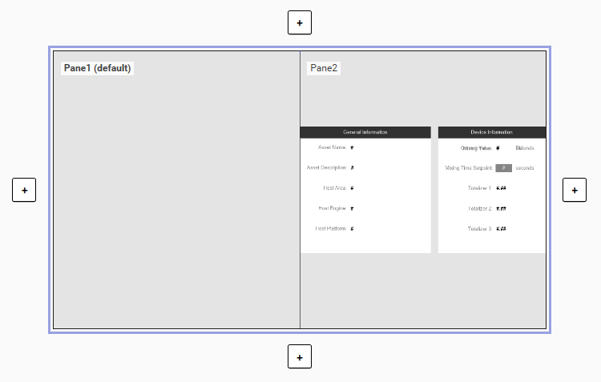
Before creating the layout, you need to import a pre-built faceplate symbol that will be used in the layout. This symbol is designed as a simple faceplate for the assets in this Galaxy.
Step 1. On the Galaxy menu, select Import → Objects → From package. The Import Objects from package dialog box appears.
Step 2. Navigate to C:\Training, select Lab 9 - AssetInfo Faceplate_Prebuilt.aaPKG, and then click Open.
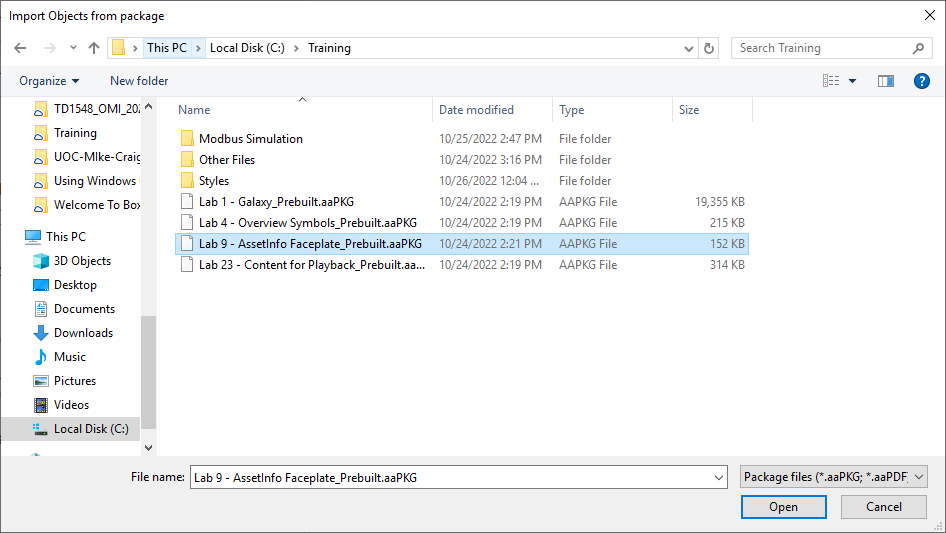
Step 3. The Import Preferences dialog box appears. Leave the default import preferences and click Import.
Step 4. When the import is complete, click Close to close the Import Objects from package dialog box.
Step 5. In the top-left corner of the backstage view, click the left arrow button to return to the main page of the System Platform IDE.
Step 6. On the Graphics tab, in the Training \ Symbols toolset, verify that the AssetInfo_Faceplate symbol is listed.
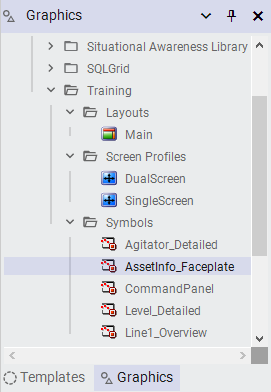
Now you will create a layout with two panes that will be used for assets in the Galaxy. You will configure a content type for one pane and manually assign the faceplate symbol to the other pane.
Step 7. On the Graphics tab, in the Training \ Layouts toolset, create a new layout and name it Asset_Layout.
Step 8. Double-click Asset_Layout to open it in the Layout Editor.
Step 9. With Pane1 selected in the preview area, click the Add new pane right-arrow button to add a pane to the right.
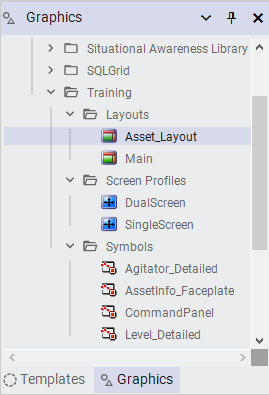
A new pane named Pane2 is added to the right of Pane1.
Step 10. With Pane1 selected, on the Properties tab, configure the General → Content Type(s) property as Detailed.
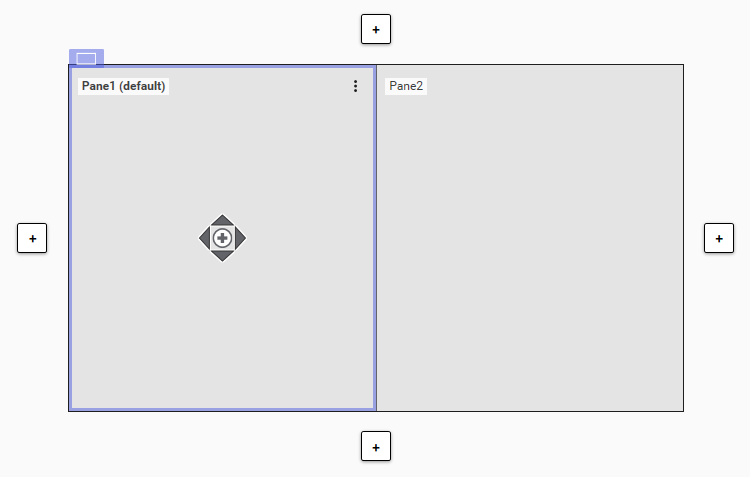
Step 11. On the Toolbox tab, search for the AssetInfo_Faceplate symbol.
Step 12. Assign the AssetInfo_Faceplate symbol to Pane2 by dragging it from the Toolbox onto the pane.
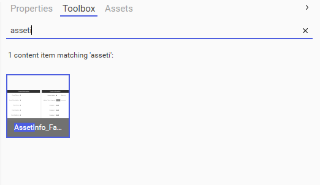
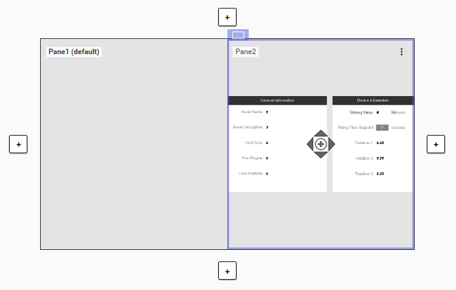
To use Asset_Layout for auto-fill in the Main layout, you must configure the Content Type(s) property for the layout itself.
Step 13. In the preview area for Asset_Layout, click outside of the panes to select the whole layout and display layout properties on the Properties tab.
Step 14. On the Properties tab, configure the General → Content Type(s) property for the layout as Detailed.
Step 15. Save and close Asset_Layout, and check it in.
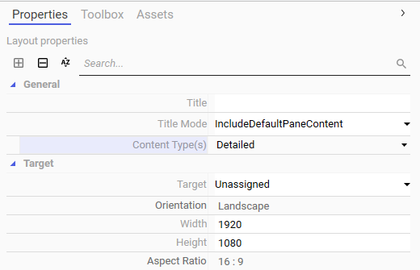
Next, you will link Asset_Layout to the $Mixer template to auto-fill content within the scope of the mixer objects. At runtime, it will be used as content for mixer objects and displayed in the Main layout as Detailed content.
Step 16. On the Templates tab, in the Training \ Project toolset, double-click $Mixer to open it in the Object Editor.
Step 17. On the Attributes tab, in the Content pane, click Link Content. The Galaxy Browser appears.
Step 18. In the Graphic Toolbox pane on the left, select the Training \ Layouts toolset, and in the right pane, select Asset_Layout.
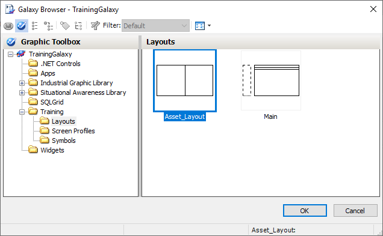
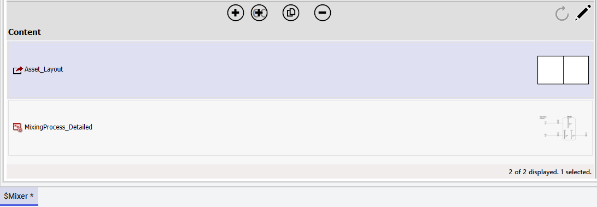
Step 19. Click OK to close the Galaxy Browser. Asset_Layout is now linked to the $Mixer template.
Step 20. Save and close the $Mixer template, and check it in.
Now you will test your changes in the ViewApp preview session.
Step 21. Switch to the ViewApp preview session and ensure you are navigated to Mixer100.
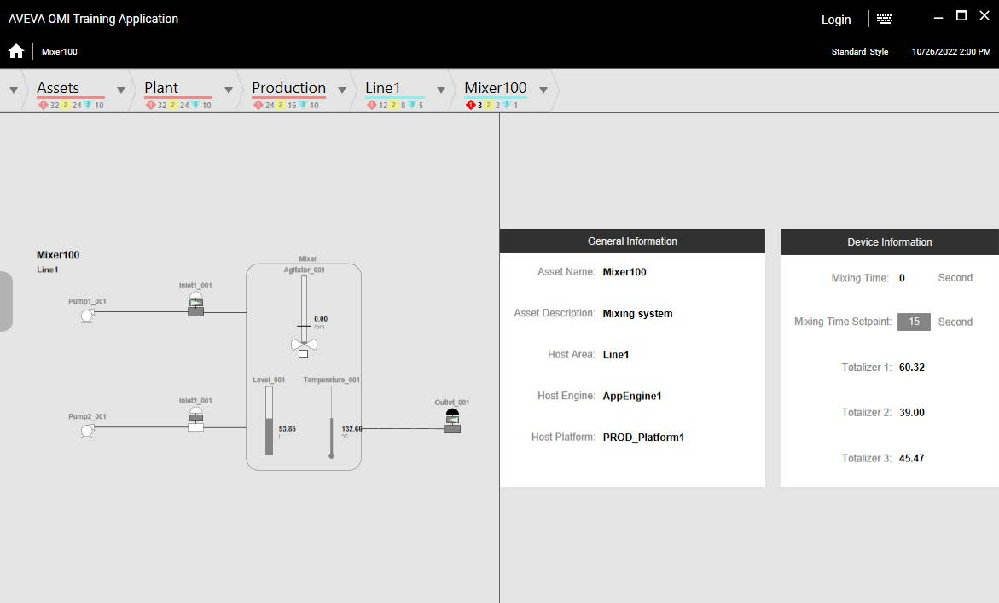
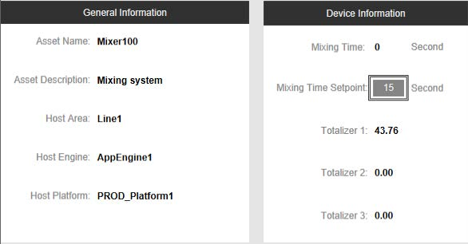
Notice that the mixer symbol displays in the left pane and the faceplate symbol displays in the right pane. The faceplate symbol contains an area for general information as well as an area for some device-specific information. In the faceplate graphic, notice that the Device Information area includes a Mixing Time Setpoint field.
Step 22. Click in the Mixing Time Setpoint field to make the value editable.
Step 23. In the Mixing Time Setpoint field, enter 10 and press ENTER.
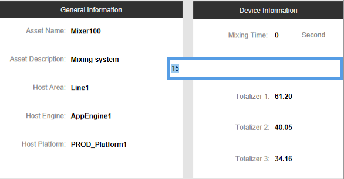
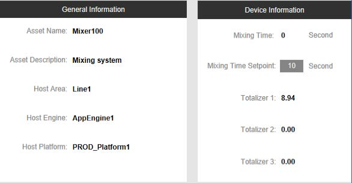
The Mixing Time Setpoint is set to 10 seconds.
Step 24. Navigate to other Mixer objects to view the related information.
Step 25. When you are finished testing, minimize the preview session.
Pane1 is configured with the Detailed content type (for auto-fill), and Pane2 contains the AssetInfo_Faceplate symbol assigned manually.
The Content Type must be Detailed so that the layout can appear within the Main layout as Detailed content, enabling auto-fill within the scope of the linked object.
Open the template in the Object Editor, go to the Attributes tab, click Link Content in the Content pane, then select the layout from the Galaxy Browser.